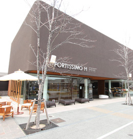
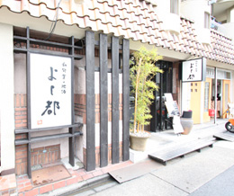
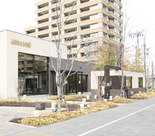
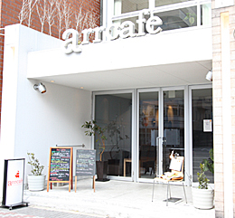
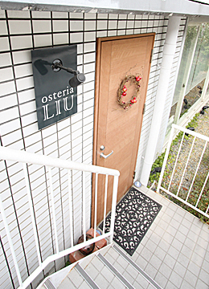
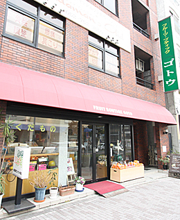
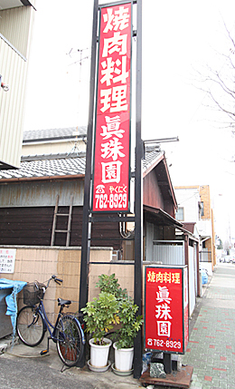
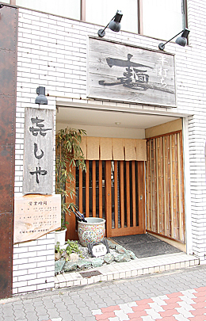
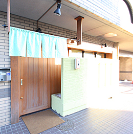

名古屋市千種区を中心に、マンション・土地・新築・中古一戸建など
豊富な不動産物件情報を掲載しています。不動産の査定もお気軽にご相談下さい。


-
一口サイズの小さめケーキで、味は逸品！
名古屋でおいしいケーキを食べるならこのお店です。
種類も豊富で、見た目もとても凝ったケーキが多く、女性にお勧め。
テイクアウトがメインで、お値段もお手頃です。
FORTISSIMO H（フォルティッシモ アッシュ／洋菓子・カフェ）
●TEL 052-761-7278
●愛知県名古屋市千種区高見2-1-16 ナゴヤセントラルガーデン
●営業時間／
[ブティック]11:00～19:30
[サロン]11:00～18:00(ラストオーダー17:30)
●定休日／月曜日（祝日の場合は翌日）
-

-
新鮮な魚介類を厳選した、魚料理が自慢のお店。
アッオホームな雰囲気の店内で、大将がこだわった素材だけで料理しますので味は絶品！
一度食べたら忘れられない美味しさです。
よし都（居酒屋）
●TEL 052-761-2111
●〒464-0067愛知県名古屋市千種区池下1-2-19山八第一ビル1階
●営業時間／ PM5:30〜AM0:30(ラストオーダー)
●定休日／日曜日
-

-
フルーツの品質の良さからくる間違いのない美味しさ。
夏にはかき氷が出たり、フルーツパフェももちろんあります。
隠れ家的に使えるお洒落なフルーツパーラーです。
FRUIT PARLOR KOBOYA 池下店（フルーツパーラー）
●TEL 052-764-5162
●愛知県名古屋市千種区覚王山通8-70-1 名鉄パレサンクレア池下店１F
●営業時間／ イートイン時間１１：００～１８：００
ランチタイム１１：００～１４：００
パフェ等のメニュー１４：００～１８：００
●定休日／無休（フルーツショップの関係で臨時休業あり）
-
明るくモダンな感じのお洒落な中華料理屋さんです。
お料理は少量ずつで品数が多く、色んな味が楽しめ、接客のしっかりした店員さんがテンポよく運んできてくれます。
ご家族とでも、お友達同士でも、お気軽に利用できるお店です。
梨杏茶樓（リンカサロウ／中華・点心）
●TEL 052-757-5665
●愛知県名古屋市千種区高見2-9-12 ナゴヤセントラルガーデン内
●営業時間／
[火〜金] 11:30〜14:00(ラストオーダー) 18:00〜21:30(ラストオーダー)
[土・日・祝] 11:30～14:00(ラストオーダー) 17:00～21:00(ラストオーダー)
●定休日／月曜日（祝日の場合は翌日）
-

-
日本一予約が取れないとの異名をもつ超人気レストラン。
人気の通り味は洗練されていて申し分なし！
全ての料理が、誰が食べても「美味しい」と感じる味付けに、洗練されている感じを受けます。
予約オンリーですので、お出かけの際は必ず予約確認が必要ですが、一度は言ってみたいお店の一つ。
ラ・ベットラ・ダ・オチアイ（イタリアン）
●TEL 052-759-5030
●愛知県名古屋市千種区高見2-9-17
●営業時間／
11:30～14:00(ラストオーダー) 18:00～21:30(ラストオーダー)
●定休日／ 月曜・第１第３日曜

-
ちょっとリッチな雰囲気を味わえるパン屋さんです。
お値段はリーズナブルですが、パンは食べごたえがあり、「美味しい」と感じるツボを抑えた味付けが好印象。
いつも多くの人で賑わっています。
MAISON KAYSER 名古屋店（メゾンカイザー／パン）
●TEL 052-757-3188
●愛知県名古屋市千種区高見2-1-20 名古屋セントラルガーデン
●営業時間／ 9:00～20:00
●定休日／不定休

-
味はもちろんの事、お店の雰囲気、店員さんの感じがとても良く、何度でも行きたくなる焼き肉屋さんです。
カウンターに座ると、お肉を2枚づつ注文する事が出来、色んなお肉を少しずつ試す、なんて食べ方も出来ます。
女性が二人で行っても楽しめますし、もちろんご家族で行くのもぴったりなお店です。
昇家池下向陽荘店（焼肉）
●TEL 052-759-4021
●愛知県名古屋市千種区向陽1-12-12
●営業時間／ [月～土]17:00～24:00 [日・祝]17:00～23:00
●定休日／無休

-
芸能人が多く訪れるお店として有名で、マスコミにも何回か取り上げられているうなぎ屋さんです。
焼き加減、味付けも絶妙で、外はパリっと、中ふっくら、とした美味しさが魅力。
注文してからテーブルに運ばれる時間も、待たされる事が少なく、店員さんの明るく元気な接客も気持ちよくさせられます。
新甫（うなぎ）
●TEL 052-761-8715
●愛知県名古屋市千種区高見2-10-2
●営業時間／11:00～14:30 16:00～20:30
●定休日／日曜、祝日

-
人気の洋食屋さんです。
落ち着いた感じの店内でゆっくり食べる事が出来、とても上品な雰囲気を味わえます。
料理は多くの人がハズレはない、と感じる味で、ハンバーグ、ビーフシチュー、コロッケ・・何を食べても満足出来るでしょう。
文化洋食店（洋食）
●TEL／
［予約専用番号］0066-9673-68099（通話料無料）
［お問合せ専用番号］052-761-2941
● 愛知県名古屋市千種区高見1-2-1 ＳＫビル １Ｆ
●営業時間／
11:30〜23:00（ラストオーダー.22:00 ランチ〜17:00）
●定休日／無休

-
照明を落とした落ち着いた雰囲気が魅力の本格イタリア料理店です。
味は勿論申し分ないですが、ボリュームもあるので、お値段の割にお得感があります。
コース料理は一品、一品、本当に丁寧に料理されている感じがして、ゆっくりと時間を取って大切な人とだけ行きたいお店、といった印象を受けました。
イルベッキオモリーノ（イタリアン）
●TEL／052-752-0006
●愛知県名古屋市千種区池下町2-28-3
●営業時間／
11:30〜14:00（ラストオーダー）
18:00〜21:30（ラストオーダー）
●定休日／月曜・第３火曜

-
お店のご主人のセンスやこだわりが光る懐石料理屋さんです。
素材から料理法までかなりこだわりをもっておられるようで、素材を一番美味しい状態にしてお客様に出す、といった印象を受けます。
席数が少ないので必ず予約が必要ですが、職人の味を味わう為に何時も予約待ち状態。女性にも人気のお店です。
梶川（懐石）
●TEL／052-752-5542
●愛知県名古屋市千種区高見1-26-4 タカミ光ビル １Ｆ
●営業時間／ 11:30～15:00 17:30～22:00
●定休日／日曜日

-
女性に人気！大人の雰囲気漂うお洒落なイタリアンカフェです。
深夜もやっているので、とても重宝します。
料理もなかなか研究しているようで、味もまずまずの満足感。
個性的でお洒落なイケメン、かわいい子が接客してくれるデートにも最適のカフェです。
arr cafe Ikeshita （アールカフェ イケシタ）
●TEL／052-762-1501
●愛知県名古屋市千種区池下1-4-20
●営業時間／11:30〜翌3:00(ラストオーダー翌2:00)
●定休日／無休
-

-
手羽先で有名な「世界の山ちゃん」。
胡椒が効いててとってもスパイシーで美味しいのに価格はリーズナブル。
気軽に利用できる居酒屋さんです。
世界の山ちゃん池下店（居酒屋）
●TEL／052-762-3888
●愛知県名古屋市千種区池下1-4-20
●営業時間／[月〜土] 17:00〜翌0:15 [日・祝] 17:00〜23:15
●定休日／年末年始

-
一面ガラス張りのお洒落な店内。
しっかりと味付けされれた美味しいイタリア料理を楽しめるお店です。
お料理はどれもボリュームたっぷりで食べごたえ満点！
しかもこの量でこのお値段、とてもリーズナブル！
デートにも使えるおすすめ店です。
Osteria LIU（オステリア リュウ／イタリアン）
●TEL／052-710-9517
●愛知県名古屋市千種区向陽1-11-14 池下ホームズ １Ｆ
●営業時間／18:00〜（ラストオーダー）23:00
●定休日／日曜、第１・第３月曜
-

-
友達同士で気軽に行ける、暖かい感じのナポリピッツァ専門店。
入り口からピッツァを釜で焼いている様子が見れたり、雰囲気も良好。
サラダやパスタ等も充実していて、ピッツァの味も間違い無し！
ｐｉｚｚａ ｅａｓｔ（ピッツァ イースト／ピザ）
●TEL／052-752-8899
●愛知県名古屋市千種区高見1-20-9
●営業時間／11:30〜15:00（ラストオーダー14:00） 18:00〜22:00（ラストオーダー21:30）
●定休日／月曜

-
かき氷で有名なフルーツ屋さんです。
人気店なのでいつも行列ができています。
正真正銘100％のフルーツジュースを氷にかけて食べるスタイルなので、食べごたえ十分！
普通のかき氷の味を予想していったら、よい意味で裏切られる美味しさを味わう事が出来る、一度入ってみたいお店です。
フルーツブティック ゴトウ
●TEL／052-751-2132
●愛知県名古屋市千種区春岡1-5-5 ゴトウ８８８ビル １Ｆ
●営業時間／10:00〜20:00
●定休日／第３日曜日
-

-
おすすめは何といっても「イベリコ子豚の丸焼き」味に間違いのない中華料理屋さんです。
料理のクオリティを考えると値段は決して高くありません！
気軽に本格は中華を味わえるおすすめ店です。
菜の花（中華）
●TEL／052-712-1182
●愛知県名古屋市千種区若水3-18-2
●営業時間／11:30〜14:00、17:30〜21:00
●定休日／木曜、第3金曜

-
創業40年あまりの老舗洋食屋さん。
店内の内装は昭和のレトロな雰囲気がイイ味出しています。
味は熟成された感じで、やはりひと味違った美味しさ。
忘れられない味？というのが適切な表現かわわかりませんが、不思議と何度も行きたくなる、そんなお店です。
グリル プランセス（洋食）
●TEL／052-761-5432
●愛知県名古屋市千種区高見2-13-14 堀清ビル Ｂ１Ｆ
●営業時間／11:30〜14:00 17:00〜24:00(ラストオーダー23:30)
●定休日／月曜日
-
家庭的な雰囲気が楽しめる美味しい焼き肉屋さん。
お値段もお手頃でおすすめです！
眞珠園 春岡本店（焼肉）
●TEL／
［予約専用番号］0066-9675-55209（通話料無料）
［お問合せ専用番号］052-762-8929
●愛知県名古屋市千種区春岡通6-24
●営業時間／17:00〜翌1:00
●定休日／月曜日（祝日の場合は翌日）
-

-
お洒落で落ち着いた印象の店内でゆっくりとケーキを楽しめるお店。
お店の内装や小物等、インテリアがとても凝っていてお洒落！
店主のセンスの良さが伺えます。
ケーキの味も申し分なく、美味しい！の一言。
テイクアウトも出来ますし、おすすめのカフェです。
Salon de The ALOUETTE （アルエットゥ／洋菓子・カフェ）
●TEL／052-762-1302
●愛知県名古屋市千種区高見1-26-4 タカミ光ビル１D
●営業時間／12:00〜19:00
●定休日／木曜・第１水曜
-
きしめん屋さんに似合わぬお洒落な店内は建築士でもある店主の設計。
BGMでJazzがかかっていたり、雰囲気はどちらかと言うとBARを連想させます。
麺は細めの平麺で、コシもしっかりしており味も文句無し！
ボリュームも比較的多めなので食べごたえもありとてもリーズナブル。
一度入ってみたいおすすめ店です。
きしや（うどん）
●TEL／052-752-7114
●愛知県名古屋市千種区仲田2-17-7 池下タワーズ1F
●営業時間／11：00〜14：00 17：30〜0：00（ラストオーダー23：00）
●定休日／水曜日
-

-
清潔感漂うとてもきれいな店内と、これまた清潔感たっぷりで男前のご主人と奥様がとても好印象なお寿司屋さんです。
デートにも、接客にも使える感じの良いお店。
握り一つ一つに時間や手間がかけられている事が伺え、量は少なめですが味はまさに逸品！
本物の美味しさを味わえるお寿司屋さん、おすすめです！
越乃（寿司）
●TEL／052-761-5878
●愛知県名古屋市千種区桐林町2-68
●営業時間／12:00〜14:00 17:30〜22:00
●定休日／月曜日・（月1回火曜日）・年末年始・お盆
-

-
イタリアンを貴重としながらも、工夫を凝らした創作料理が魅力的なお店です。
味はもちろん、見た目もとても奇麗な料理は目でも楽しめ、店員さんの料理の説明も大変丁寧で好印象。
デートや記念日に使えるおすすめのイタリア料理店です。
Le Gioie（レ ジョイエ／イタリアン）
●TEL／052-752-5065
●愛知県名古屋市千種区池下1-2-19 山八第一ビル １Ｆ
●営業時間／11:30〜13:30（ラストオーダー） 18:00〜21:30（ラストオーダー）
●定休日／水曜日、第1第3火曜日

-
気さくで人柄のいい大将が焼いてくれる美味しい焼き鳥が魅力。
男性、女性でも一人で気楽に食べにいける不思議な魅力があります。
値段も味も文句無しで、カウンター席はいつも常連客で賑わっています。
火の鶏（焼き鳥）
●TEL／052-741-1377
●愛知県名古屋市千種区今池5-5-12
●定休日／日曜日・祝日